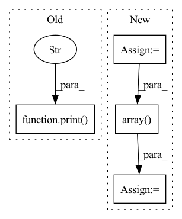

Pattern ID :29119
Before Change
print("last_sample_time", stream.get_last_sample_time())
type = stream.get_type()
print("type" , type.get_name())
for t in range(min(stream.get_size(), 1000)):
print("stream name", stream.get_name(), "t", t, "off", stream.get_size())
After Change
gt_dem = np.array(gt_dem_compound["data"].cast())
gt_dem = gt_dem.reshape((-1, int(np.sqrt(gt_dem.shape[0]))), order="F")
gt_data_um_compound = self.pocolog_pybind.pocolog.get_sample(occ_dem_stream, msg_idx)
gt_data_um = np.array( gt_data_um_compound["data"].cast())
gt_data_um = gt_data_um.reshape((-1, int(np.sqrt(gt_data_um.shape[0]))), order="F")
res_grid = np.array([0.05, 0.05])
rel_position_z = occ_dem[int(occ_dem.shape[0] // 2), int(occ_dem.shape[1] // 2)]In pattern: SUPERPATTERN
Frequency: 4
Non-data size: 4
Instances Fragment ID: 85794173
Project Name: mstoelzle/solving-occlusion
Commit Name: ed2440145acb1157898c7e8bba245ef2de4ac717
Time: 2021-02-05
Author: maximilian@stoelzle.ch
File Name: src/dataset_generation/ga_slam_pocolog_dataset_generator.py
M Class Name: GASlamPocologDatasetGenerator
N Class Name: GASlamPocologDatasetGenerator
M Method Name: run(1)
N Method Name: run(1)
M Parent Class: BaseDatasetGenerator
N Parent Class: BaseDatasetGenerator
M File Name: src/dataset_generation/ga_slam_pocolog_dataset_generator.py
N File Name: src/dataset_generation/ga_slam_pocolog_dataset_generator.py
M Start Line: 71
M End Line: 141
N Start Line: 71
N End Line: 111
Before Change
returns the observation, the reward, and a done signal for end of episode
obs must be a list of numpy arrays
print(f"obs: {self.drone_int.read_obs()}" )
pass
// return obs, rew, done
def get_observation_space(self):After Change
obs must be a list of numpy arrays
self.drone_int.update()
obs = self.drone_int.read_obs()
// print(f"obs:{obs}")
o = [np.array( [obs[0], obs[1], obs[2], self.target, time.time() - obs[4]], dtype=np.float32) , ]
r = - np.float32(abs(self.target - obs[0]))
d = (r >= -1)
return o, r, d Fragment ID: 85794159
Project Name: trackmania-rl/tmrl
Commit Name: cd4eb35420d67250b9c25e3bee29a31bb406aa28
Time: 2020-11-04
Author: yann.bouteiller@hotmail.fr
File Name: agents-rt/agents/custom/custom_gym_interfaces.py
M Class Name: CogniflyInterfaceTask1
N Class Name: CogniflyInterfaceTask1
M Method Name: get_obs_rew_done(1)
N Method Name: get_obs_rew_done(1)
M Parent Class: RealTimeGymInterface
N Parent Class: RealTimeGymInterface
M File Name: agents-rt/agents/custom/custom_gym_interfaces.py
N File Name: agents-rt/agents/custom/custom_gym_interfaces.py
M Start Line: 454
M End Line: 455
N Start Line: 459
N End Line: 465
Before Change
image_features = np.array(image_features)
trajectory_history = np.array(trajectory_history)
trajectory_future = np.array(trajectory_future)
print("img shape" , image_features.shape)
print("history shape", trajectory_history.shape)
print("future shape", trajectory_future.shape)
if not os.path.exists(DATA_PATH):After Change
image_history = []
trajectory_history = []
trajectory_future = []
intent_pose = []
for frame_idx in tqdm(range(stride*history, len(all_frames) - stride*future, stride)):
frame_token = all_frames[frame_idx]
all_instance_tokens, all_instance_indices = extractor.filter_instances(frame_token, stride, history, future)
num_insts = len(all_instance_tokens)
with multiprocessing.Pool(processes=os.cpu_count()) as pool:
inputs = zip(all_instance_tokens, all_instance_indices, [frame_token]*num_insts, [extractor]*num_insts, [ds]*num_insts)
results = pool.starmap(get_data_for_instance, inputs)
[image_history.append(feature) for feature, _, _, _ in results]
[trajectory_history.append(feature) for _, feature, _, _ in results]
[trajectory_future.append(feature) for _, _, feature, _ in results]
[intent_pose.append(feature) for _, _, _, feature in results]
image_history = np.array(image_history)
trajectory_history = np.array(trajectory_history)
trajectory_future = np.array(trajectory_future)
intent_pose = np.array( intent_pose)
print("img history shape", image_history.shape)
print("history shape", trajectory_history.shape)
print("future shape", trajectory_future.shape)
print("intent pose shape", intent_pose.shape) Fragment ID: 85794158
Project Name: xushenlz/parksim
Commit Name: 5bf389a0e7eca3b376329a58cc1bf99832105114
Time: 2022-03-11
Author: xushen0118@outlook.com
File Name: python/parksim/trajectory_predict/data_processing/create_dataset.py
M Class Name: AnonimousClass
N Class Name: AnonimousClass
M Method Name: create_dataset(2)
N Method Name: create_dataset(2)
M Parent Class:
N Parent Class:
M File Name: python/parksim/trajectory_predict/data_processing/create_dataset.py
N File Name: python/parksim/trajectory_predict/data_processing/create_dataset.py
M Start Line: 88
M End Line: 93
N Start Line: 87
N End Line: 115
Before Change
loss.backward()
optimizer.step()
if batch_idx % log_interval == 0:
print(f"Train Epoch: {epoch} [{batch_idx * len(data)}/{len(train_loader.dataset)}"
f"({100. * batch_idx / len(train_loader):.0f}%)]\tLoss: {loss.item():.6f}" )
def test(model, device, test_loader):
model.eval()After Change
def train(log_interval, model, device, train_loader, optimizer, epoch):
loss_list = []
model.train()
for batch_idx, (data, target) in enumerate(train_loader):
data, target = data.to(device), target.to(device)
optimizer.zero_grad()
output = model(data)
loss = F.nll_loss(output, target)
loss.backward()
optimizer.step()
loss_list.append(loss.item())
// if batch_idx % log_interval == 0:
// print(f"Train Epoch: {epoch} [{batch_idx * len(data)}/{len(train_loader.dataset)}"
// f"({100. * batch_idx / len(train_loader):.0f}%)]\tLoss: {loss.item():.6f}")
loss_list = np.array( loss_list)
print("Epoch " + str(epoch) + " - loss avg: " + str(np.mean(loss_list)))
def test(model, device, test_loader): Fragment ID: 85794160
Project Name: mlf-core/machine_learning_determinism_evaluation
Commit Name: b8a499131125427873c07e9dfd65b038937427ba
Time: 2022-05-09
Author: luis.kuhn@gmail.com
File Name: bin/train_mnist_pytorch.py
M Class Name: AnonimousClass
N Class Name: AnonimousClass
M Method Name: train(6)
N Method Name: train(6)
M Parent Class:
N Parent Class:
M File Name: bin/train_mnist_pytorch.py
N File Name: bin/train_mnist_pytorch.py
M Start Line: 47
M End Line: 58
N Start Line: 46
N End Line: 63